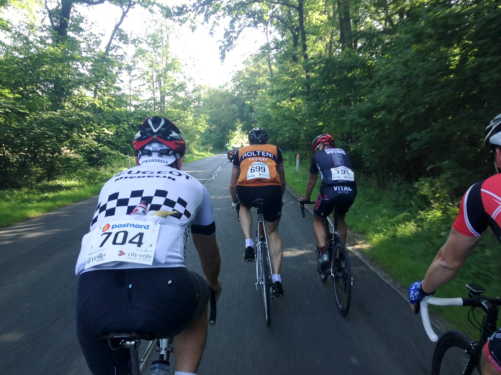
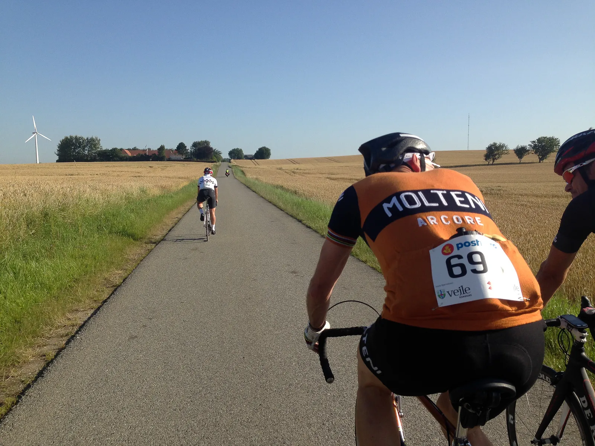
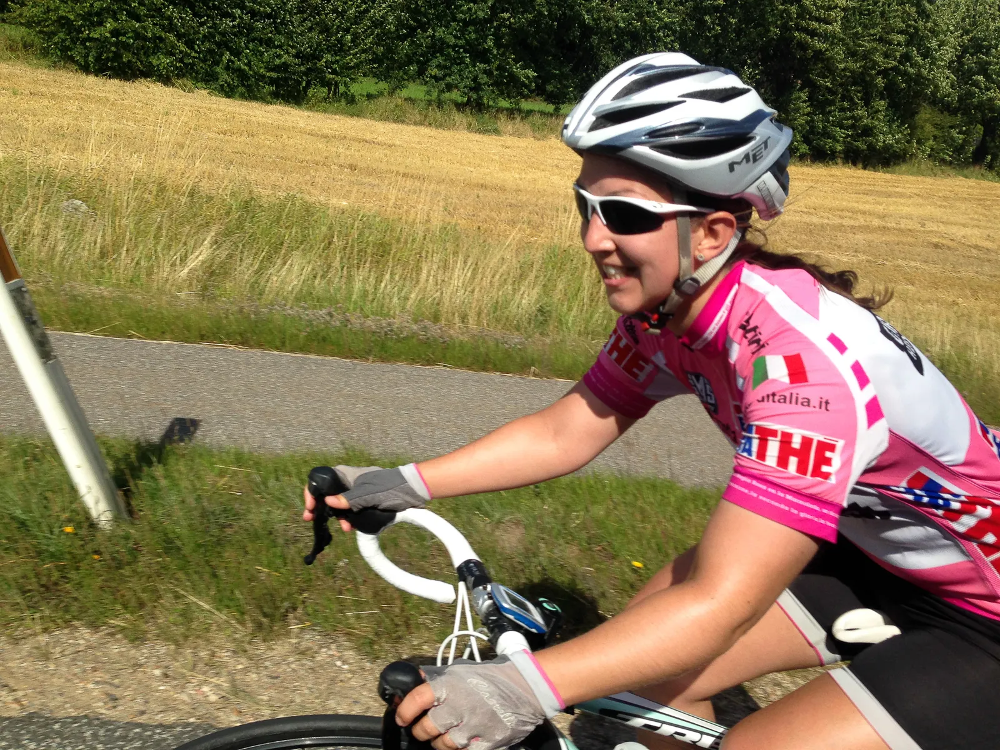
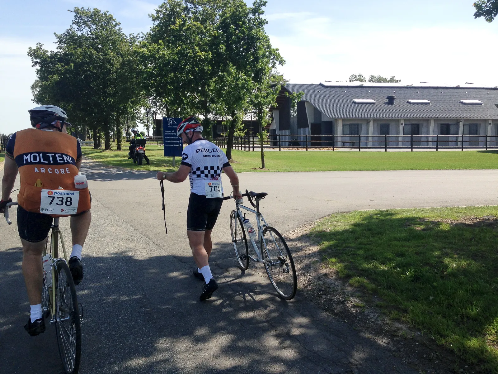
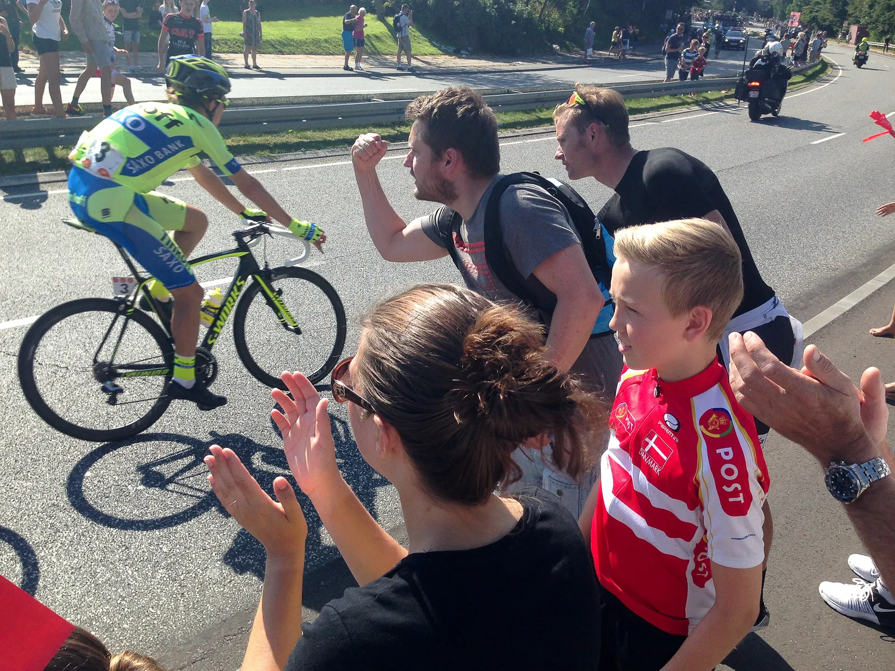

Løbsberetning: Post Danmark Rundt Kongeetapen 2015

Squadra Molteni stillede til start ved Kongeetapen 2015 med kaptajn Niels Bjørnsteen, løjtnant Kasper Sørensen og holdets stagiaire Steffen Sørensen.
Morten Mejsen fra Peugeot Re-Cycled var for en flaske billig fransk rødvin hyret til at køre som hjælperytter for Squadra Molteni.
Men det blev til skønne spildte penge…
Starten gik kl. 08.30 og der blev rullet ud af Vejle i moderat tempo.

Squadra Molteni startede i et stort felt, hvor størstedelen af rytterne var fra Cult. Tempoet var fint – ikke mindst fordi, at feltet den første times tid blev ført an af den yderst velkørende ex-professionelle Claus Michael Møller.
Kongeetapen 2015: De første defekter rammer
Lige inden de to alvorlige stigninger Rosenvold og Daugaard Strand nord øst for Vejle, mistede Squadra Molteni deres hjælperytter fra Peugeot Re-Cycled.

Et baghjul havde løsnet sig – og Morten måtte af og reparere.
Kort efter de to stigninger og for fuld damp mod Vejle, blev stagiaire Steffen Sørensen ramt af en punktering. Niels og Kasper valgte at hjælpe med slangeskiftet – og mindre end 3 minutter efter, gik det igen mod Vejle.
Herefter stod menuen på Munkebjerg og Højen Skovvej. To barske stigninger.
Men tempoet og kræfterne var stadig i top.
Kasper tog en ordentlig dingerføring
Det vil sige, at bomstærke løjtnant Kasper Sørensen lå og trak feltet for fuld damp.
Kort før Egtved og efter små 10 km med Kaspers forcering (kaptajn Niels måtte dog lige en tur op og beordre Kasper til at gemme lidt kræfter til de alvorlige bakker de sidste 50 km) indhentede vi et større felt.
Deri lå vores ven fra Peugeot Re-Cycled!? Nå, men Morten er jo lokalkendt – og kendte vist nok en genvej.

Vi kørte en kort smut i depot i Egtved – men da vi skulle køre igen – var vores franske hjælperytter væk! Han var kørt!? Kort før depotet havde vi mødt Maria, der var super kørende. Efter Egtved stod den på den ene lange stigning efter den anden.
Flere defekter på materiel og muskler
Og på toppen af den klassiske “Blue Hors” så vi igen vores franske ven. Denne gang dog gående og med sin kæde i hånden! Kaptajn Niels stak Monsieur Mejsen en kædespringer – og derefter fortsatte Squadra Molteni.

Men løjtnant Kasper måtte desværre betale prisen for sin stærke kørsel mod Egtved. Kramper i begge ben meldte sig på hver bakke.
Stagiaire Steffen fulgte også trop med begyndende kramper på bakkerne.
Ingen Kongeetape uden Gl. Kongevej og Kiddesvej
Efter et par bakker med meget nedsat tempo for at undgå kramper, meldte løjtnant Kasper, at han måtte stå af og se om han kunne få bugt med kramperne.
Kaptajn Bjørnsteen fortsatte de sidste 30 km mod Vejle alene.
Her stod den på den helt vanvittige stigning Gl. Kongevej samt Jellingvej, Hopballe, Haraldskjær og Koldingvej inden den frygtede afslutning på Kiddesvej.
Reultaterne fra Kongeetapen 2015
Bjørnsteen kørte i mål i tiden 06:06:47.
Efter Kaspers “exit” for at få bugt med kramperne, kørte stagiaire Steffen i krampemoderat tempo mod Vejle.
Steffen klarede fornemt de resterende bakker uden at kramperne fik bugt med ham.
Steffan kom i mål i 06:15:10.
Kasper stod dog ikke af. Han drak et par liter vand (han var inde og få vand hos et par lokale) – og det afhjalp kramperne.
Kasper kom flot igen – uden kramper – og sluttede i 06:17:34.
Squadra Moltenis soignere Maria Winther kørte også Kongeetapen.
Hun var fantastisk velkørende og forstod af finde gode og velkørende felter de første 140 km.
De sidste 35 km kørte hun dog stort set alene.
Ikke desto mindre kom Maria ind i supertiden 06:26:16.
